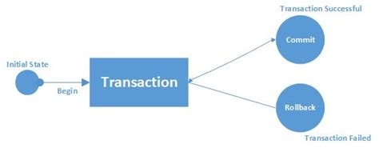
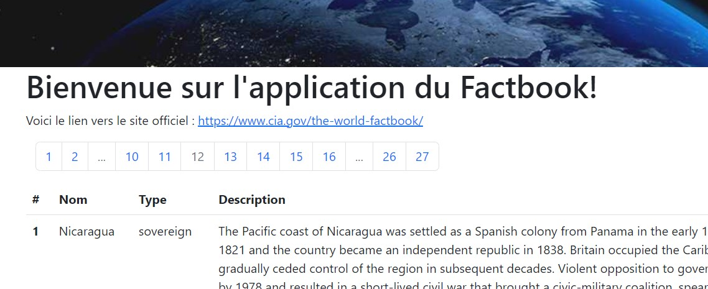

Code concerné: Seance4/lecture: pour cette partie, une route Flask pour chaque cas se trouve l'application lecture. A la fin de chacune de ces routes, les données sont transformées pour être affichées dans le template, ce qui nous intéresse moins dans cette partie.
La lecture de la documentation SQLAlchemy de query est recommandée pour appréhender l'ensemble des membres de query.
query.all() Afin de pouvoir requêter la base de données, il est nécessaire d'appeler la méthode query des classes des modèles de base de données. Pour ramener l'ensemble des données de la classe -- donc de la table relationnelle --, query possède le membre all().
all() renvoie une liste l'objets mappés par l'ORM qu'il faut imaginer ainsi: [<Objet 1>, <Objet 2>]. En itérant sur chacun des objets, les valeurs de l'objet sont accessibles par le nom du champ déclaré dans la classe du modèle.
Un exemple vaut mieux que la théorie:
# routes/generales.py /all
from ..models.factbook import Country
...
query = Country.query
tous_resultats = query.all()
...
Commentaires:
Country est la classe du modèle de base de données models/factbook.py; cette classe correspond donc à la table country dans la base de donnéesquery possède de nombreux membres (nous le verrons au fur et à mesure de ce cours), une variable query ou q est déclarée en début de route; elle servira de réceptable aux opérations que l'on effectuera ensuite sur les donnéesall() est appliquéSELECT *
FROM country
NB: query dédoublonne les objets, ce qui peut conduire à ce que len(resultat_query) soit inférieur à un count() effectué sur les mêmes données. Ce dédoublonnage est effectué sur la clé primaire.
query.first() Comme son nom l'indique, first() renvoie uniquement le premier résultat sous la forme <Objet 1>
# routes/generales.py /first
from ..models.factbook import Country
...
query = Country.query
resultat = query.first()
...
Son équivalent SQL est le suivant:
SELECT *
FROM country
LIMIT 1
query.limit() Comme son nom l'indique, limit() renvoie uniquement le premier nombre de résultats demandé sous la forme [<Objet 1>,<Objet 2>, etc.]
# routes/generales.py /limit
from ..models.factbook import Country
...
query = Country.query
resultat = query.limit(10).all()
...
Son équivalent SQL est le suivant:
SELECT *
FROM country
LIMIT 10
query.get() get(identifiant) retourne un objet selon un identifiant donné en paramètre. Cet identifiant est une des valeurs du champ de clé primaire de la table relationnelle/classe du modèle.
# routes/generales.py /get
from ..models.factbook import Country
...
query = Country.query
resultat = query.get("fr")
...
Son équivalent SQL est le suivant:
SELECT *
FROM country
WHERE id = 'fr'
filter() est un des membres de query. Il permet de filtrer les données de la table relationnelle. Afin d'avoir les potentiels résultats en retour, il est nécessaire d'appeler all(), first() ou get() à la suite. filter() prend autant de paramètres qu'il y a de conditions. Une condition s'exprime ainsi:
query.filter(Classe_du_modele.champ operateur_de_comparaison Valeur)
# routes/generales.py /filter
from ..models.factbook import Country
...
query = Country.query
resultat = query.filter(Country.type == "sovereign").all()
...
Son équivalent SQL est le suivant:
SELECT *
FROM country
WHERE type = 'sovereign'
Il existe plusieurs manières d'accumuler les filtres (un AND SQL), ou d'appliquer des opérateurs spécifiques tels que OR, LIKE, NOT.
AND Comme évoque ci-dessus, filter accepte autant de paramètres que de conditions; ainsi, si plusieurs conditions sont séparées par une virgule, un AND implicite sera appliqué.
# routes/generales.py /filter_and_implicite
from ..models.factbook import Country
...
query = Country.query
resultat = query.filter(Country.type == "sovereign", Country.id == 'fr').all()
...
Son équivalent SQL est le suivant:
SELECT *
FROM country
WHERE type = 'sovereign' AND id = 'fr'
Un opérateur SQLAlchemy existe également pour appliquer un AND. C'est en réalité c'est opérateur qui est appliqué lorsque les paramètres sont accumulés dans filter: il s'agit de and_(). Il est exprimé de la manière suivante:
query.filter(and_(Classe_du_modele.champ operateur_de_comparaison Valeur, Classe_du_modele.champ operateur_de_comparaison Valeur))
# routes/generales.py /filter_and_explicite
from ..models.factbook import Country
from sqlalchemy import and_
...
query = Country.query
resultat = query.filter(and_(Country.type == "sovereign", Country.id == 'fr')).all()
...
OR De même que pour AND, l'expression de OR peut se faire de deux manières.
# routes/generales.py /filter_or_implicite
from ..models.factbook import Country
...
query = Country.query
resultats = query.filter((Country.type == 'dependency')|(Country.id == 'fr')).all()
...
Son équivalent SQL est le suivant:
SELECT *
FROM country
WHERE type = 'dependency' OR id = 'fr'
L'autre méthode est l'utilisation du or_() de SQLAlchemy, qui prend autant de paramètres que de conditions.
# routes/generales.py /filter_or_explicite
from ..models.factbook import Country
from sqlalchemy import or_
...
query = Country.query
resultat = query.filter(or_(Country.type == "dependency", Country.id == 'fr')).all()
...
query.count() count() retourne un INTEGER. Il peut être appliqué directement après query ou bien après filter ou tout autre membre de query.
# routes/generales.py /count
from ..models.factbook import Country
...
query = Country.query
resultat = query.filter(Country.type == 'sovereign').count()
...
Son équivalent SQL est le suivant:
SELECT COUNT(*)
FROM country
query.order_by() Par défaut, order_by() trie par ordre ascendant, comme dans SQL.
# routes/generales.py /order_by
from ..models.factbook import Country
...
query = Country.query
resultat = query.order_by(Country.name).all()
...
Son équivalent SQL est le suivant:
SELECT *
FROM country
ORDER BY name
Si l'on veut trier par ordre descendant, il convient d'appeler la méthode .desc() disponible pour chacun des champs de la classe du modèle de base de données.
# routes/generales.py /order_by_desc
from ..models.factbook import Country
...
query = Country.query
resultat = query.order_by(Country.name.desc()).all()
...
query.group_by() # routes/generales.py /group_by
from ..models.factbook import Country
...
query = Country.query
resultat = query.group_by(Country.type).all()
...
Son équivalent SQL est le suivant:
SELECT type
FROM country
GROUP BY type
La requête effectuée ci-dessus revient en réalité à effectuer un
SELECT DISTINCT type
FROM country
Avec SQLAlchemy, il est possible de faire un query.distinct(); afin d'indiquer le(s) champ(s) sur le(s)quel(s) effectuer le distinct, il est nécessaire d'utiliser with_entities(Classe.champ) en amont. Ce with_entities permet d'expliciter les champs que l'on souhaite voir retournés dans notre liste de résultats.
# routes/generales.py /distinct
from ..models.factbook import Country
...
query = Country.query
resultat = query.with_entities(Country.type).distinct()
...
query.having() Imaginons que nous souhaitions afficher tous les types de pays qui ont plus de 20 pays rentrés dans la table Country. En SQL, nous effectuerions la requête suivante:
SELECT type, COUNT(*)
FROM country
GROUP BY type
HAVING COUNT(*) > 20
Avec SQLAlchemy, la logique est la même:
group_byhaving# routes/generales.py /having
from ..models.factbook import Country
from sqlalchemy import func
...
query = Country.query
resultat = query.group_by(Country.type).having(func.count(Country.name) > 20).all()
...
sqlalchemy.func fournit de très nombreuses fonctions avancées pour effectuer des requêtes:
maxminsumcountCette méthode est à privilègier dès lors que les jointures sont simples puisqu'elles sont incluses dans la déclaration des classes du modèle de base de données.
Lors de la création des classes dans models/factbook.py, nous avons créé des champs qui ne sont pas physiquement dans les tables grâce à db.relationship(). Pour la classe Country(), c'est notamment le cas de resources.
Dès lors qu'une relation est indiquée dans une classe, l'objet sur lequel pointe la relation est accessible depuis notre objet requêté. Prenons l'exemple des ressources des pays:
# models/factbook.py Country()
...
resources = db.relationship(
'Resources',
secondary=country_resources,
backref="resources"
)
...
resources renvoie vers la table country_resources, qui a été décalrée en tout début de modèle.country_resources a elle-même une relation, grâce à une clé étrangère, vers la classe Resources:# models/factbook.py Country()
...
db.Column('resource', db.String(100), db.ForeignKey('resources.id'), primary_key=True)
...
Les objets de la Resources liés aux objets Country via la table country_resources sont alors accessibles depuis les objets Country sans avoir à le spécifier dans la requête SQLAlchemy.
En SQL, nous écririons la requête suivante:
SELECT *
FROM country a
INNER JOIN country_resources b on b.id = a.id
INNER JOIN resources c on c.id = b.resource
Avec SQLAlchemy, il suffit de la requête suivante:
Country.query.all()
Tout s'effectue ensuite dans la manière d'appeler les attributs de classes; par exemple, pour obtenir le nom de la ressource, il faut écrire : country.resources.name (où country est un des objets de la liste de résultats).
Créons une route qui affiche les ressources d'un pays donné en paramètre:
# routes/generales.py /ressources
...
@app.route("/ressources/<string:nom>")
def ressources(nom):
ressources = []
query = Country.query
ressources = query.filter(Country.name == nom).first()
return render_template("pages/pays.html", pays=nom, ressources=ressources, sous_titre=nom)
Puisqu'un seul pays est indiqué en paramètre et passé en filtre, il est suffisant de faire un first() dans la requête.
Dans le template, on peut alors boucler sur les ressources du pays:
<!-- templates/pages/pays.html -->
...
{%if ressources %}
<ul>
{%for resource in ressources.resources %}
<li>{{resource.name}}</li>
{%endfor%}
</ul>
{%else%}
<p>Il n'y a pas de ressources connues pour ce pays</p>
{%endif%}
...
query.select_from() et query.join() Pour contrôler plus finement les jointures entre classes et le résultat obtenu, il est possible d'utiliser conjointement select_from() et join().
# routes/generales.py /altitude
...
donnees = db.session.\
query(Elevation).\
select_from(Country).\
join(Country.elevations).\
filter(Country.name == nom).\
all()
...
Commentaires:
db.session permet d'ouvrir directement une session avec la base de données. Cette étape était normalment effectuée par SQLAlchemy quand Country.query était appelé.query(Elevation) indique les données qui sont renvoyées dans le résultat, mais aussi la classe avec laquelle la jointure s'effectueraselect_from(Country) indique le FROM SQLjoin(Country.elevations) indique le champ de classe qui sert de clé pour faire la jointure avec Elevation. Ici, nous indiquons la propriété de relation elevationsfilter() est un filtre sur les données comme vu précédemmentCountry, mais une liste d'objets ELevation, comme demandé dans le query(Elevation)SELECT b.*
FROM country a
JOIN elevation b on b.id = a.id
WHERE a.name = 'France'
query.union() Il peut arriver que l'on ai besoin d'assembler plusieurs résultats de requête (avec chacun un schéma de sortie identifique bien entendu). C'est le rôle du union, comme en SQL.
Prenons un exemple: une route reçoit en paramètres deux pays de manière à afficher les ressources de chacun de ces pays.
Une première solution serait d'effectuer un simple filter(or_()).
@app.route("/ressources_simple/<string:nom>/<string:nom_>")
def ressources_simple(nom, nom_):
ressources = []
ressources = Country.query.filter(or_(Country.name == nom, Country.name == nom_)).all()
return render_template("pages/ressources.html", pays=nom, ressources=ressources, sous_titre=nom_)
En SQL, l'équivalent serait la requête suivante:
SELECT *
FROM country a
INNER JOIN country_resources b on b.id = a.id
INNER JOIN resources c on c.id = b.resource
WHERE a.name = 'France' or a.name = 'Germany'
Mais pour étudier union, nous pourrions très bien agréger deux requêtes SQLAlchemy pour créer le résultat attendu.
@app.route("/ressources_union/<string:nom>/<string:nom_>")
def ressources_union(nom, nom_):
ressources = []
query = Country.query
ressources_nom = query.filter(Country.name == nom)
ressources_nom_ = query.filter(Country.name == nom_)
ressources = ressources_nom.union(ressources_nom_).all()
return render_template("pages/ressources.html", pays=nom, ressources=ressources, sous_titre=nom_)
Pour union(), la requête SQL serait :
SELECT *
FROM (SELECT *
FROM country a
INNER JOIN country_resources b on b.id = a.id
INNER JOIN resources c on c.id = b.resource
WHERE a.name = 'France'
UNION
SELECT *
FROM country a
INNER JOIN country_resources b on b.id = a.id
INNER JOIN resources c on c.id = b.resource
WHERE a.name = 'Germany'
)
Avant d'aborder ces trois opérations sur les données, il est nécessaire de réviser ce qu'est une transaction SQL:

Avec SQLAlchemy, les étapes sont identiques:
INSERT L'insertion de données est l'opération la plus simple puisqu'elle ne nécessite pas d'identifier au préalable l'objet existant sur lequel effectuer la modification. Il suffit alors de créer un nouvel objet, puis de l'insérer.
# routes/generales.py /add_country
from ..models.factbook import Country
from ..app import db
@app.route("/add_country/<string:pays>/<string:id>/<string:type>")
def add_country(pays, id, type):
nouveau_pays = Country(id=id , name=pays , type=type)
db.session.add(nouveau_pays)
db.session.commit()
Commentaires:
nouveau_pays est une nouvelle instance de la classe Country; les attributs de cette classe (les champs de la table) sont remplis avec les valeurs adéquatesadd(object)commit()Voici l'équivalent SQL généré:
INSERT INTO country(id, Introduction,name, type)
VALUES ('pr', null , 'Paris' ,'dependency');
COMMIT;
Créons une route /add_ressources/<string:pays>/<string:ressource> qui puisse ajouter une ressource à un pays.
# routes/generales.py /add_ressource
from ..models.factbook import Country
from ..app import db
@app.route("/add_ressource/<string:pays>/<string:ressource>")
def add_ressource(pays, ressource):
pays = Country.\
query.\
filter(Country.name == pays).\
first()
ressource = Resources.\
query.\
filter(Resources.name == ressource).\
first()
pays.resources.append(ressource)
db.session.add(pays)
db.session.commit()
Commentaires:
pays et ressourceressource aux ressources de l'objet pays via la relation entre la classe Country et la classe ResourcesCode concerné: Seance4/insertion
NB : pour la gestion des erreurs et les rollback(), voir le prochain cours sur la gestion des erreurs
UPDATE Afin d'effectuer une mise à jour sur une ligne d'une table de la base de données, il faut au préalable récupérer l'objet que l'on souhaite modifier.
Si l'on souhaite par exemple modifier le name de la ressource PET, il faut:
name grâce à update(dictionnaire_champ_valeur)# routes/generales.py /update_ressource
from ..models.factbook import Resources
@app.route("/update_ressource/<string:current_name>/<string:new_name>")
def update_ressource(current_name, new_name):
Resources.query.filter(Resources.name == current_name).update({"name": new_name})
db.session.commit()
update étant un des membres de query, il est possible de l'appliquer directement après avoir sélectionner le bon objet. Il ne faut pas oublier d'effectuer le commit à la fin de l"instruction.
L'équivalent SQL de cette route serait:
UPDATE resources
SET name = 'pétrole'
WHERE name = 'petroleum';
COMMIT;
Code concerné: Seance4/update
DELETE Pour supprimer un objet, il y a deux possibilités. Dans les deux cas, l'objet doit être préalablement séléctionné, et les modifications committées.
La première méthode est équivalente à celle de l'INSERT, c'est à dire que l'objet est sélectionné par une requête, puis on appelle db.session.delete(objet).
@app.route("/delete_ressource/<string:name>")
def delete_ressource(name):
ressource = Resources.\
query.\
filter(Resources.name == name).\
first()
db.session.delete(ressource)
db.session.commit()
Le seconde méthode est comme celle de l'UPDATE et utilise le membre delete de query.
@app.route("/delete_ressource_by_query/<string:name>")
def delete_ressource_by_query(name):
Resources.query.filter(Resources.name == name).delete()
db.session.commit()
Dans les deux cas, l'équivalent SQL serait:
DELETE FROM resources
WHERE name = 'petroleum';
COMMIT;
Code concerné: Seance4/delete
Jusqu'à présent, nous affichons tous les résultats de nos requêtes sur une seule page, comme /all. Qu'il y ait 5 ou 300 résultats, tous sont sur cette page. Il convient donc désormais d'effectuer une pagination sur nos résultats afin d'avoir des pages homogènes et lisibles. Une pagination contient:
Cette fonctionnelité est présente dans SQL avec LIMIT et OFFSET, ce que nous pourrions développer dans une route /pagination_sql:
@app.route("/pagination_sql/<int:numero_page>/<int:nb_resultats>")
def pagination_sql(numero_page, nb_resultats):
donnees = []
query = Country.query
tous_resultats = query.limit(nb_resultats * numero_page).offset(numero_page).all()
En SQL, la requête serait la suivante:
SELECT *
FROM country
LIMIT 20
OFFSET 2
Cette manière de faire, plutôt artisanale, n'est pas sans problèmes:
C'est pourquoi Flask-SQLAlchemy propose une méthode paginate() qui remplace all() et prend 3 paramètres en entrée:
page: numéro de la pgae, commençant par 1per_page, nombre de résultats par pageerror_out: si True, une erreur 404 sera retournée si plus aucun résultat n'est trouvéLe retour de cette méthode un objet Pagination qui comporte les méthodes suivantes, toutes très utiles:
| Méthode | Description | Retour |
|---|---|---|
has_next |
Indique la présence ou non d'une page suivante | True si une page suivante existe |
has_prev |
Indique la présence ou non d'une page précédente | True si une page précédente existe |
items |
Fournit les items correspondant à la requête et à la pagination demandées | Liste des items de la page demandée |
iter_pages |
Itère sur les numéros de pages de la pagination (4 paramètres permettent de gérer le numéro des pages à afficher; voir la documentation) | Liste de numéros de pages |
next |
Objet Pagination correspondant à la page suivante | |
next_num |
Numéro de la page suivante | Integer |
page |
Numéro de la page actuelle | Integer |
pages |
Nombre total de pages | Integer |
prev |
Objet Pagination correspondant à la page précédente | |
prev_num |
Numéro de la page précédente | Integer |
total |
Nombre d'items correspondant à la requête | Integer |
Le nombre de résultats par page peut provenir de deux sources différentes:
per_page provient de l'URL via un paramètreper_page peut être une variable globale de l'application; alors cette variable est déclarée dans les variables d'environnement et lue dans la classe Config(); c'est ce choix que nous allons faire# .env
...
PAYS_PER_PAGE=10
# config.py Config()
...
PAYS_PER_PAGE = os.environ.get("PAYS_PER_PAGE")
Il est ensuite temps de modifier la route en ne renvoyant pas un ensemble de résultats au template via all(), mais en renvoyant uniquement l'objet Pagination résultant de paginate().
# routes/generales.py
...
@app.route("/pays/<int:page>")
def pays(page):
donnees = []
query = Country.query
tous_resultats = query.paginate(page=page, per_page=app.config["PAYS_PER_PAGE"])
Une fois l'objet Pagination (tous_resultats dans notre cas) transmis au template, tout se fait dans ce dernier.
<!-- templates/pages/pays.html-->
{%if pagination%}
<table class="table">
<thead>
<tr>
<th scope="col">#</th>
<th scope="col">Nom</th>
<th scope="col">Type</th>
<th scope="col">Description</th>
</tr>
</thead>
<tbody>
{%for pays in pagination.items%}
<tr>
<th scope="row">{{loop.index}}</th>
<td>{{pays.name}}</td>
<td>{{pays.type}}</td>
<td>{{pays.Introduction}}</td>
</tr>
{%endfor%}
</tbody>
</table>
{%endif%}
Commentaires:
all(), l'itération se fait ici sur l'objet Pagination .itemsCountry dans notre cas, comme ce que l'on trouvait auparavant dans la liste de résultats allAfin d'afficher une barre de navigation entre les pages, paginate nous aide à nouveau.
<!-- templates/macros.html pagination_macro -->
<!-- une macro est ici utilisée pour éviter la répétition de code; il est cependant tout à fait possible d'utiliser le code à l'intérieur et de le mettre directement dans le template templates/pages/pays.html -->
<div class="container">
<nav aria-label="research-pagination">
<ul class="pagination">
{%- for page in pagination.iter_pages() %}
{% if page %}
{% if page != pagination.page %}
<li class="page-item">
<a class="page-link" href="{{ url_for("pays", page=page+1) }}">{{page}}</a>
</li>
{% else %}
<li class="page-item active disabled">
<a class="page-link">{{page}} <span class="sr-only">(actuelle)</span></a>
</li>
{% endif %}
{% else %}
<li class="page-item disabled">
<a class="page-link">...</a>
</li>
{% endif %}
{%- endfor %}
</ul>
</nav>
</div>
Désormais, la navigation entre les pages de résultats est très facile:
paginate a réduit au minimum le code nécessaire pour créer des barres de navigation
Code concerné: Seance4/pagination